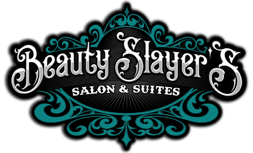

THE BEAUTY SLAYER STORY
Angela Lynn Herzog-Grzesiowski was born and raised in Lake Havasy City. Her daughter Madeline Bousquet, was also born here. They both graduated from LHHS and All Beauty College. This is their home and they wouldn't have it any other way.After working for another salon for three years, Angela knew she wanted to create a salon that you can walk into and immediatly feel at home. When her daughter chose to follow her footsteps into the beauty insudtry she knew it was time.
Beauty Slayer's Salon first opened in 2019 with five hair stations and a single nail station. When given the opportunity in 2021 to expand Angela knew it was the right thing to do. Beauty Slayer's now has eight styling chairs, two nail stations, and five private studios. Now called Beauty Slayer's Salon and Suites, this is the place for you to call your beauty home!